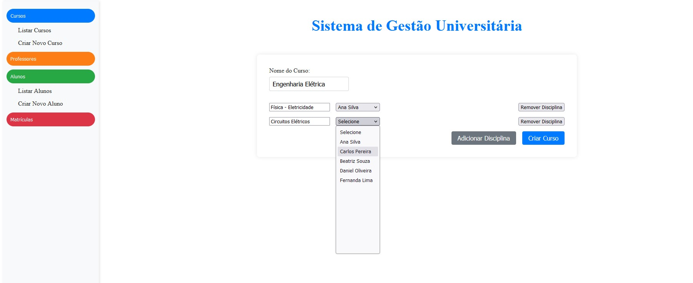

<link rel="stylesheet" href="../css/projetos.css">
<section id="projects">
    <section class="intro">
        <h1>Lab - Meus Projetos de Programação</h1>
        <p>Bem-vindo ao meu laboratório de programação! Aqui você encontrará uma seleção dos meus principais
            projetos, onde compartilho as tecnologias utilizadas, imagens ilustrativas e links para o
            repositório no GitHub. Cada projeto reflete minha paixão pela programação e minha dedicação em
            criar soluções eficientes e inovadoras. Sinta-se à vontade para explorar e descobrir mais sobre
            o meu trabalho.</p>
    </section>

    <section class="projects">
        <article class="project">
            <h2>Soft skills Up</h2>

            <em>
                <p>

                    <b>Importância das Soft Skills</b>
                </p><br>
                <p>
                    As soft skills, ou habilidades interpessoais, são competências essenciais no ambiente de
                    trabalho moderno. Elas incluem habilidades como comunicação eficaz, liderança, trabalho
                    em
                    equipe, resolução de problemas, e adaptabilidade. Diferentemente das hard skills, que
                    são
                    específicas para uma determinada tarefa ou função, as soft skills são aplicáveis a
                    diversas
                    situações e são cruciais para a colaboração e o sucesso organizacional.
                </p><br>
                <p>
                    A importância das soft skills está crescendo à medida que as empresas reconhecem que,
                    para
                    alcançar objetivos estratégicos e manter um ambiente de trabalho positivo, é necessário
                    mais
                    do que apenas habilidades técnicas. As soft skills facilitam a interação eficaz entre os
                    funcionários, melhoram a moral da equipe, aumentam a produtividade e contribuem para um
                    ambiente de trabalho harmonioso.
                    Descrição do Projeto


                </p><br>
                <p><b>Descrição do projeto</b></p><br>
                <p>
                    Este projeto de aplicativo educacional foi desenvolvido para ajudar os usuários a
                    melhorar
                    suas soft skills por meio de uma plataforma interativa e amigável. A aplicação oferece
                    uma
                    variedade de recursos, incluindo quizzes interativos, listagem e detalhes de eventos, e
                    perfis de usuários, tudo projetado para proporcionar uma experiência de aprendizado
                    enriquecedora e contínua.


                </p><br>
                <p>
                    Os usuários podem se cadastrar, fazer login e participar de quizzes que avaliam e
                    aprimoram
                    suas habilidades interpessoais. Além disso, a aplicação oferece uma seção dedicada a
                    eventos, onde os usuários podem encontrar webinars, workshops e conferências
                    relacionadas a
                    soft skills. Através de perfis de usuários, os participantes podem acompanhar seu
                    progresso
                    e histórico de quizzes, permitindo uma análise contínua de seu desenvolvimento.
                </p><br>

                <p><b>Tecnologias Utilizadas:</b> HTML, CSS, JavaScript, PHP, SQL Server</p><br>
            </em>

            
            <a class="github-button" href="https://github.com/ramosbrp/soft-skills-up" target="_blank">
                código
                
            </a>

            <a class="github-button" href="https://softskillsup-app.azurewebsites.net/" target="_blank">
                Ir
                
            </a>
        </article>

        <article class="project">
            <h2>My University</h2>
            <em>
                <p><b>Descrição do projeto:</b></p><br>
                <p>Este sistema de gestão universitária foi desenvolvido como um projeto de portfólio para
                    demonstrar minhas habilidades em desenvolvimento web, orientação a objetos, banco de dados e
                    API.
                    O objetivo é facilitar a administração de cursos, disciplinas, professores e alunos em
                    um ambiente universitário. A aplicação permite gerenciar matrículas, atribuir
                    professores às disciplinas e acompanhar o desempenho dos alunos por meio de notas.</p>
                <br>

                <p><b>Tecnologias Utilizadas:</b> .Net8, Asp.Net MVC 5, Angular, API Rest, Entity Framewoork, SQL
                    Server
                </p><br>
            </em>
            
            <a class="github-button" href="https://github.com/ramosbrp/MyUniversityApp" target="_blank">
                código
                
            </a>

            <a class="github-button" href="https://myuniversity-app.azurewebsites.net/" target="_blank">
                Ir
                
            </a>
        </article>


        <!-- Repetir para cada projeto -->
    </section>
</section>